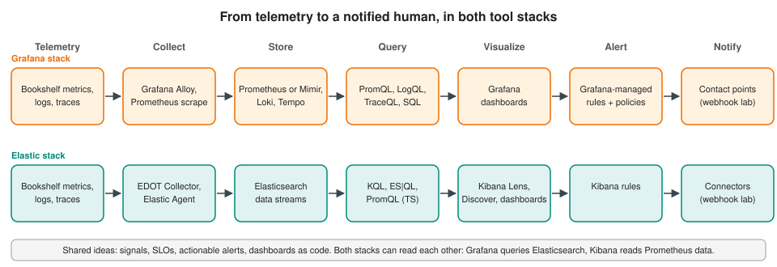

Grafana vs Kibana
|
This content was generated with the assistance of AI and should be verified against the official documentation before being relied on in production. |
Checked on 2026-11-09 against Grafana 13.3.x and Kibana 9.5.x.
Grafana and Kibana both draw dashboards and send alerts, so they are often presented as alternatives. They are better understood as answers to different starting points. Grafana starts from the dashboard and asks "where is your data?": it queries many back ends in place and keeps only its own configuration. Kibana starts from the data store and asks "what is in Elasticsearch?": it is the interface of the Elastic Stack, so ingestion, storage, search, machine learning and alerting share one platform. Most differences in the sections below follow from that. This page compares them concept by concept, shows the lab timings measured for the same service in both tools, and ends with guidance on choosing and on combining them. The concepts themselves are taught in the shared pages, and the tool pages are linked from every row.

At a glance
| Topic | Grafana 13.3 | Kibana 9.5 |
|---|---|---|
Role |
Visualization, exploration and alerting layer over many data sources |
User interface of the Elastic Stack and of Elastic Observability |
Where the data lives |
In the data sources (Prometheus, Mimir, Loki, Tempo, Elasticsearch, SQL databases and others) |
In Elasticsearch, as data streams and indices |
Main query languages |
PromQL, LogQL, TraceQL, SQL, the Elasticsearch query languages, and one language per data source |
KQL and Lucene for filters, ES|QL for analysis, and PromQL over time series data streams since 9.5 |
Dashboard model |
Panels that each query a data source, variables, library panels, JSON schema (v1 and v2) |
Lens and other panels over data views and ES|QL, controls, saved objects, Dashboards API |
Alerting model |
Alert rules, then a notification policy tree, then contact points |
Rules with actions that point at connectors; per-action frequency |
As code |
File provisioning, HTTP API, Terraform provider, Foundation SDK, Operator, Git Sync |
Kibana APIs, saved-object import, Terraform provider, Dashboards API |
Sources: Grafana introduction and The Elastic Stack.
Data model and data sources
Grafana has no storage of its own for telemetry, so the data model is whatever the data source provides. A panel’s query returns data frames, and transformations and expressions reshape them in Grafana. This is why one dashboard can place a Prometheus request rate next to a Loki log panel and a PostgreSQL business count (Data Sources). The price is that every back end must be installed, sized and secured separately, and every one brings its own query language.
Kibana reads Elasticsearch. Logs, metrics and traces are documents in data streams, described to Kibana by data views, and the shared mapping (ECS or OpenTelemetry-native fields) lets one query language cover all three signals (Data Views & Discover, Data Streams, TSDS & Lifecycle). Storage, retention and downsampling are Elasticsearch features, so the same product runs ingestion, lifecycle and alerting. Storage, Retention & Cost compares the cost shape of the two back-end families.
Reference: Grafana: Data sources and Elastic: Data streams.
Query languages
| Task | Grafana | Kibana |
|---|---|---|
Filter documents or log lines |
LogQL stream selectors and line filters; Lucene in the Elasticsearch data source |
KQL or Lucene in the search bar |
Rate of a counter |
PromQL |
ES|QL |
Group by a dimension |
|
|
Time buckets |
Interval variables such as |
|
Join with reference data |
Transformations, or SQL joins in the database |
ES|QL |
The practical difference is that Grafana asks you to know the language of each back end, while Kibana asks you to know ES|QL once and use it for visualizations, variable controls and rules. Native PromQL in Kibana narrows the gap for teams that already hold Prometheus-style queries. The Grafana Elasticsearch data source accepts Lucene, raw Query DSL in code mode and ES|QL, so Grafana can sit on top of an Elastic back end as well.
Equivalent Bookshelf queries in both tools are in Metric Types & Aggregation, Grafana: Queries, Explore & Drilldown and Kibana: Querying with KQL, ES|QL & PromQL.
Reference: Grafana: Elasticsearch data source and Elastic: ES|QL.
Visualizations and dashboards
Both tools cover the common chart types (time series, bars, gauges, stats, tables, heat maps, pies and maps), and the choice of chart is a design question before it is a tool question (Choosing a Visualization). The catalogues differ in how they are built. Grafana panels are plugins, and a dashboard panel carries its own query, transformations and field configuration. Kibana builds most charts in Lens from fields, with ES|QL visualizations for free-form analysis, plus Maps, Vega and legacy editors for special cases.
Dashboard features line up as follows:
| Feature | Grafana | Kibana |
|---|---|---|
Variables and filters |
Variables (query, custom, interval, ad hoc filters) with repeating |
Controls & Drilldowns and variable controls for ES|QL |
Reuse of a panel |
Library panels shared across dashboards |
Saved visualizations and library items |
Annotations |
Annotations and links, including alert state annotations |
Annotations in Lens (preview on the Stack), alert and event layers |
Sharing and reports |
Links, snapshots, embedding; PDF reports need Enterprise or Cloud |
|
Access control |
Reference: Grafana: Dashboards and Elastic: Dashboards.
Alerting model
The two alerting systems solve the same problem (turn a condition into the right message for the right person) with different building blocks. Grafana separates what is wrong from who is told: alert rules produce labelled alert instances, and a tree of notification policies matches the labels to a contact point, groups alerts and sets the repeat interval. Kibana puts the routing inside each rule: a rule lists actions, each action names a connector and says when it runs (on each check, on a status change or on a custom interval).
| Concept | Grafana | Kibana |
|---|---|---|
Where a condition is defined |
Alert rule: queries, expressions and a condition |
Rule of a rule type (Stack rules, Observability rules) |
Where the destination is defined |
Contact points: a named receiver with one or more integrations |
Connectors: a configured integration that rule actions reuse |
How an alert reaches the destination |
Notification policies: a routing tree with matchers, grouping, group wait, group interval and repeat interval |
Action frequency: on check intervals, on status change or custom interval, per action group |
Message content |
Notification templates in Go templating |
Mustache action variables in the action’s message |
Alert states |
||
Planned downtime |
Silences (ad hoc, matcher based), mute timings (recurring) and inhibition rules |
Rule snooze, per-alert snooze and maintenance windows (scheduled, with KQL filters) |
Missing data |
Per-rule No Data and Error handling, with the |
A no-data behaviour on the rule types that support it, such as the custom threshold rule |
Recording of what happened |
Alerts table and the event log |
Four differences matter most when you migrate a design from one tool to the other.
Contact points versus connectors. A Grafana contact point is a receiver that the policy tree points at, and a message template belongs to it. A Kibana connector is a reusable integration, and each rule action chooses the connector, the action group and the message. In Grafana you change who is paged by editing the tree once. In Kibana you change every rule that uses the action, unless the rules are managed as code from a shared definition.
Notification policies versus action frequency. Grafana groups alerts that share labels into one notification and decides when to repeat it with group wait, group interval and repeat interval. Kibana acts per rule and per action group and repeats according to the action’s frequency. Grafana’s design gives one message per incident-shaped group by default. Kibana’s gives the precise per-rule control, and the cost of noise control is in the frequency settings you choose.
Silences and mute timings versus snooze and maintenance windows. Both pairs separate ad hoc suppression from recurring suppression. A Grafana silence matches labels for a period and the alert still evaluates. A mute timing is a recurring schedule attached to policies. Kibana snoozes a whole rule or one alert, and a maintenance window schedules suppression with a KQL filter across rules. Grafana adds inhibition rules, which stop a symptom notification while its cause is already firing.
Pending and resolution. A Grafana rule has a pending period, so the first notification waits for the condition to hold. A
Kibana rule has no pending state, and the first run in which the condition is true creates an active alert. A Grafana resolved
message is sent when the alert resolves, subject to the policy’s group interval, while a Kibana recovered message is sent only
if the rule has an action for the recovered action group.
Reference: Grafana: Alerting fundamentals and Elastic: Alerting.
Measured in the lab
The two end-to-end pages build the same five alerts on the Bookshelf service and switch the load generator into the failure modes in turn. The times below are from the lab runs, measured from the moment the mode changed to the first notification at the webhook receiver. They are lab measurements of default-style settings, not benchmarks of either product, and they mostly reflect the pending periods and windows each page chose.
| Scenario | Grafana | Kibana | Why they differ |
|---|---|---|---|
High 5xx ratio |
2 min 32 s |
1 min 15 s |
Grafana waited for a 2 minute pending period; Kibana has none and its rule runs every minute |
p95 latency above the objective |
6 min 51 s |
2 min 24 s |
The Grafana rule has a 5 minute pending period; the Kibana APM rule uses a 5 minute window and no pending state |
No data (service stopped) |
3 min 20 s |
5 min 25 s |
Grafana alerts on a missing |
Error-log spike (log-only rule) |
1 min 52 s |
1 min 4 s |
Both count ERROR lines in 5 minutes; Grafana adds the policy group wait |
Resolved messages behave differently too: Grafana sent resolved notifications after its group interval (the 5xx rule resolved 5 min 29 s
after normal traffic returned), while the Kibana rules recovered silently because no action was attached to the recovered
group. Read the details on
Grafana: Bookshelf End to End and
Kibana: Bookshelf End to End.
As code
| Resource | Grafana | Kibana |
|---|---|---|
Dashboards |
JSON files with file provisioning, HTTP API, |
Dashboards API, saved-object export and import, |
Alert rules |
Alerting provisioning files, provisioning HTTP API, |
Alerting HTTP API, |
Notification destinations and routing |
|
|
Spaces and access |
Folders and teams, service accounts |
|
Both tools have an official Terraform provider, and both are better managed as code than clicked. The shared page Observability as Code explains the workflow; the tool pages are Provisioning Alerting Resources, Dashboards as Code, Alerting APIs & Terraform and Dashboards as Code. A frequent gotcha differs per tool: the Grafana notification policy resource replaces the whole tree, and a Kibana rule created through the API runs with the privileges captured from the API key of the user who last created or edited it.
Licensing tiers and hosted offerings
This site names no prices. What matters for the comparison is which capabilities need what.
| Aspect | Grafana | Kibana |
|---|---|---|
Free, self-managed |
Grafana OSS and Grafana Enterprise without a licence key: dashboards, Explore, alerting, provisioning, contact points |
Elastic Stack under the basic licence: dashboards, Lens, Discover, rules with the Index and Server log connectors |
Capabilities that need a paid tier or licence |
Grafana Enterprise features such as role-based access control, data source permissions, reporting and usage insights |
Webhook, e-mail, Slack, PagerDuty and other connectors need Gold or above; machine learning, SLOs and some other features need a subscription level that includes them |
Hosted |
Grafana Cloud, which adds Grafana SLO and Grafana IRM |
Elastic Cloud Hosted (the Stack, operated) and Elastic Cloud Serverless (projects, no versions to manage) |
The lab uses a trial licence for the Elastic Stack so that every feature can be exercised. Check the subscription page of each vendor for the tier of any feature before you design around it, because tiers and trials change.
Reference: Grafana Enterprise, Elastic subscriptions and Kibana: Connectors (tier per connector).
Step-by-step guides side by side
Both subsections have a series of hands-on guides that run in the lab, 20 for Grafana and 19 for Kibana. The table pairs the guides that do the same task, so you can do it in one tool and then in the other. Guides without a counterpart (Grafana transformations and expressions, the Kibana anomaly detection, Observability apps and Console guides) are listed on the Grafana and Kibana pages.
| Task | Grafana guide | Kibana guide |
|---|---|---|
First steps in the tool |
||
Connect the data |
||
Explore metrics, logs and traces |
Explore logs in Discover, Field statistics, patterns and ES|QL in Discover |
|
Dashboards |
||
Charts and panels |
Time series panels, Stat, gauge and bar gauge, Tables, Bar chart, pie, histogram and heatmap |
Time series charts in Lens, Metric, gauge and table, Proportion and distribution charts |
Maps |
||
Variables and controls |
ES|QL panels and variable controls, Arrange and connect a dashboard |
|
Layout, sharing and reuse |
Rows, tabs, layouts, annotations and links, Reuse, versions and sharing |
Arrange and connect a dashboard, Share, export and move dashboards |
Alert rules |
Create a rule with a connector, Observability rules and SLOs |
|
Notifications |
||
Silences and maintenance windows |
||
Access |
When to choose which
Choose Grafana when your telemetry is already spread over several stores (Prometheus metrics, Loki logs, Tempo traces, a SQL database), when you want one dashboard and one alerting system across them, or when your team already speaks PromQL. Its alerting model rewards a team that wants central routing: one tree decides who is paged for every service.
Choose Kibana when Elasticsearch already holds your logs, traces and business data, when you want search, machine learning, APM, Synthetics and SLOs in one product, or when you ingest through Elastic Agent and the EDOT Collector. Its rule-and-action model rewards a team that wants each rule to carry its own response.
Use both when the data and the habits are split. Grafana can query Elasticsearch through its Elasticsearch data source (raw Query DSL and ES|QL), so an Elastic-based team can have Grafana dashboards beside Prometheus ones. Elastic 9.5 also announced a migration tool that brings Grafana dashboards and alerts into Elastic, and native PromQL lets dashboards that already use PromQL point at Elastic with little change. Alert on one platform at a time for a given service, because two systems paging for the same condition double the noise.
Verify in the lab: run the grafana profile, then the kibana profile, and compare the first notification of the same
scenario in the webhook receiver log. The numbers will differ from the table above if you change a pending period or a window,
and that is the point: most of the differences you see are configuration, not product.
Reference: Grafana: Elasticsearch data source and What’s new in Elastic 9.5.
In the books
The Grafana books (Salituro, McCollam, Hernandez and Chapman and Holmes) and the Elastic books (Shah, Paro, Chhajed, Konda and Melachi) never compare the two tools directly, and they cover versions long before the ones above. Salituro shows Grafana on Elasticsearch data, and the Chapman and Holmes alerting chapter and the Hernandez chapter on alerting explain mute timings and silences in the older Grafana model. Use them for method, and take current behaviour from the pages linked in each section. The publisher pages are in the bibliography.